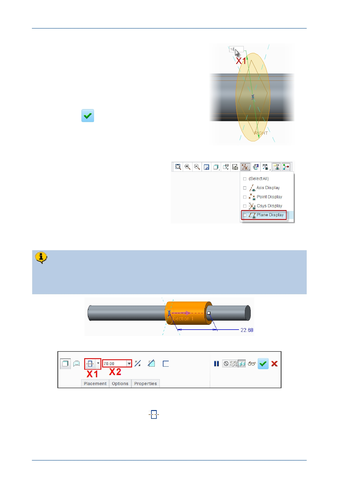

PTC Academic Program
5. Changing the circle diameter:
Double-click the diameter dimension value at
X1 , then type 12 and press ENTER .
6. Completing the sketch:
Click OK
from the Close group of the
Sketch tab.
7. Disable the display of datum
planes.
8. Defining the extrude to form the shoulder of the strut:
By default, Creo Parametric displays a preview of the extruded circle adding
material to the right of the sketch plane. You will now use options in the
dashboard to make the feature extrude 70 mm on both sides of the sketch plane.
Select Extrude on both sides
from the depth drop-down menu (shown as
X1 ).
Click in the depth field X2 , type 70 and press ENTER .
© 2012 PTC
Creo Parametric 2.0 Primer
Page 52